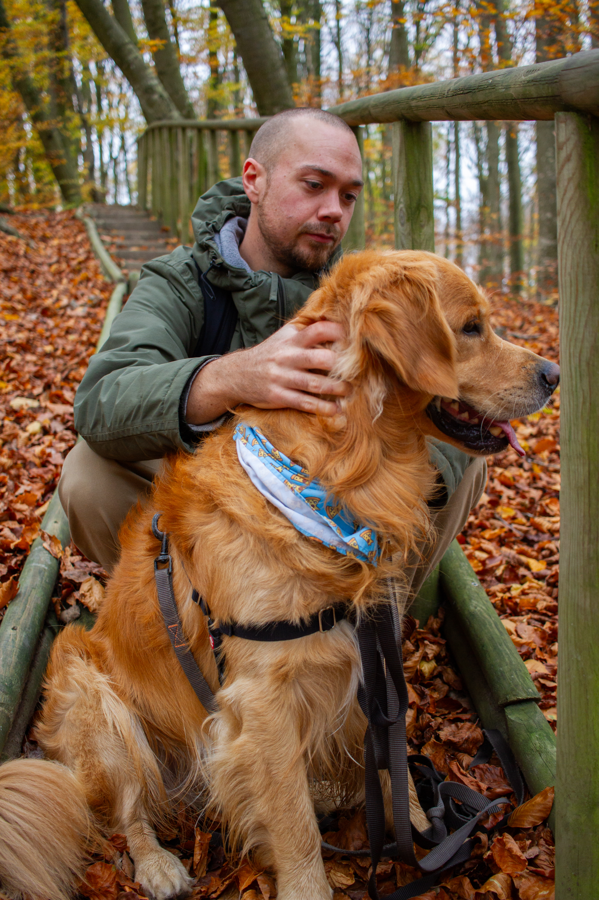
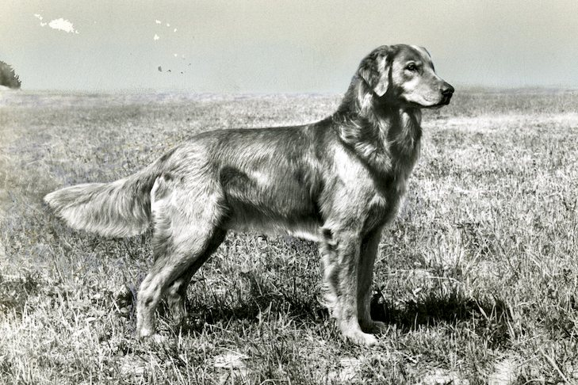

Welcome!
This website is dedicated to my dog Abbe. He is a soon to be four years old Golden Retriever.
Furthermore, you will get to learn about the Golden Retriever, its history and what is special about the breed.
The story of Abbe
Abbe was born on the 16th of March 2022 in a rather small town in Portugal called Sintra.
He was the chunkiest, most clumsy puppy of the brood.
He was raised in a camper van and about two years later he moved to Sweden along with his pet mom Vicci.


He has since then grown to become a stable, happy adult.

He also got his new pet dad, Jakob.


Even though he is very polite and well-behaved, he still gets the zoomies.
The history of the Golden Retriever
The Golden Retriever is originally from the Scottish Highlands in the mid-1800s and is
a blend of the yellow Wavy-Coated Retriever and the Tweed Water Spaniel.
The goal
was to create the perfect gundog to retrieve shot birds during hunting. Later, Irish Setters
and Bloodhounds were added for their skills and keen sense of smell.
Due to the color of their fur,
they became recognized as "Golden Retrievers".

This is what the first Golden Retriever looked like.
After the First World War, the breed became increasingly popular and in the years to come
it spread throughout all of the Western countries.
The Golden Retriever is now one of the most
recognized as well as registered dog breeds in the Western world.
What's special about the Golden Retriever
There are many factors making the Golden Retriever a very special dog breed.
They are very friendly, get along great with kids, love to cuddle, always excited
for an adventure and enjoy learning new tricks.
Here are some more interesting facts about the Golden Retriever.
- Golden Retrievers love to eat. This is why owners tend to measure food precisely.
- Golden Retrievers have very soft mouths. Because birds and other game shouldn't be damaged when retrieved.
- They have strong empathy and a calming effect on humans. They therefore make great therapy dogs.
- Golden Retrievers are naturally friendly and will make friends with anyone. You should not trust them to be good guard dogs.
- They love water and will take every chance they get to swim. Make sure to bring a towel wherever you go, it will get wet.
- They love to carry things in their mouth. Make sure to hide your socks!
Hide your belongings or consider them stolen!